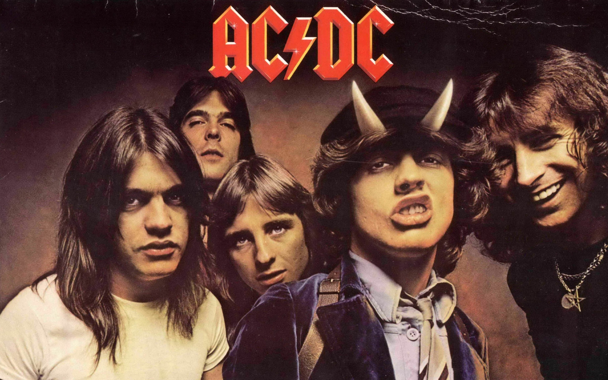

AC/DC — австралийская рок-группа, сформированная в Сиднее в ноябре 1973 года выходцами из Шотландии, братьями Малькольмом и Ангусом Янгами.
Наряду с такими группами, как Led Zeppelin, Deep Purple, Queen, Iron Maiden, Scorpions, Black Sabbath, Uriah Heep, Judas Priest и Motörhead, AC/DC часто рассматриваются как пионеры хард-рока и хеви-метала. Сами же музыканты классифицировали свою музыку как рок-н-ролл, поскольку в её основе лежит ритм-н-блюз с сильно искажённым звучанием ритмической и соло-гитар. Коллектив прошёл через несколько изменений составов, прежде чем в 1975 году был издан первый альбом группы, High Voltage. Состав группы оставался неизменным, пока бас-гитарист Марк Эванс не был заменён Клиффом Уильямсом в 1977 году. 19 февраля 1980 года от сильного алкогольного опьянения умер вокалист и автор песен коллектива Бон Скотт. Группа имела все шансы распасться, однако замена Скотту была найдена в лице бывшего вокалиста группы Geordie Брайана Джонсона. В том же году группа записала свой самый продаваемый альбом — Back in Black. Коллектив продал свыше 200 миллионов экземпляров альбомов по всему миру, включая 72 миллиона в США. Самый успешный альбом, Back in Black, был продан в количестве более 22 миллионов в США и более 42 миллионов за их пределами. В целом AC/DC является самой успешной и известной рок-группой из Австралии и одной из популярнейших в мире.